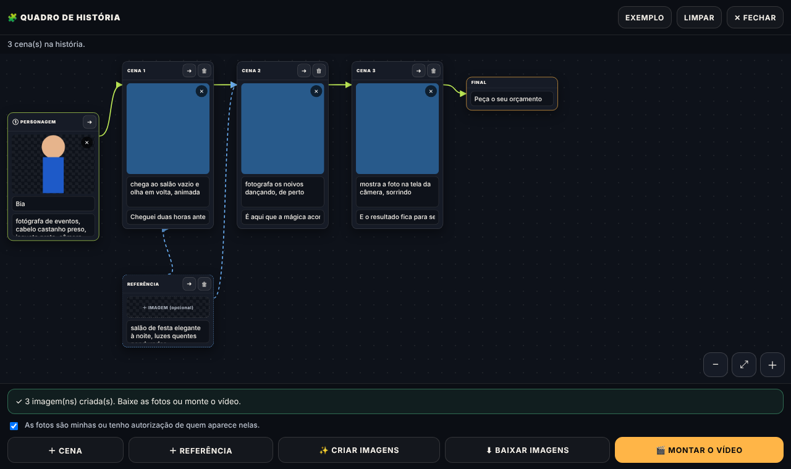

09 · Marketing
BW Reels Pro: quadro de história
O botão 🧩 QUADRO DE HISTÓRIA abre um quadro livre onde você monta a história com blocos ligados por setas. No fim, o app cria as imagens de cada cena ou o vídeo inteiro. Funciona no computador e no celular.

Personagem, cenas em ordem, uma referência ligada a duas cenas e o final.
- 1PERSONAGEM: coloque a foto (fundo liso sai sozinho), o nome e como ele é. Sem foto, a história fica só com as cenas.
- 2＋ CENA: escreva o que acontece e, se quiser, a fala. Cada cena nova entra no fim da história. Arraste o bloco pelo título para arrumar.
- 3＋ REFERÊNCIA: um lugar, objeto ou estilo. Toque em ➜ nela e depois na cena onde vale (ou no personagem, para valer em todas). Toque numa seta para apagar.
- 4✨ CRIAR IMAGENS: a IA desenha uma imagem por cena com o mesmo personagem (precisa de login; 15 imagens por dia). ⬇ BAIXAR IMAGENS entrega só as fotos.
- 5🎬 MONTAR O VÍDEO: o app mostra o plano e o custo estimado de cada modo. ⚡ Automático faz de graça no app o que dá e indica IA de vídeo só nas cenas com movimento. ★ Pro indica a melhor IA em todas. Só o app é grátis. As cenas de IA chegam com o texto na aba MÍDIA; no aplicativo BW Reels do PC, com a sua IA conectada, GERAR O CLIPE AQUI faz o clipe.
A foto só é enviada depois da sua confirmação, numa cópia pequena, e nada fica guardado. O quadro fica salvo neste aparelho. Ao postar, marque “Feito com IA”.